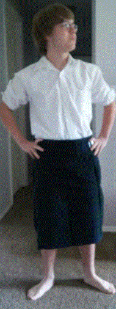

I am a junior at the Miami Valley Career Technology Center, currently in Game Programming and Web Design. My home school is Wayne High School. Wayne High School is in Huber Heights, Ohio and I've lived there all my life. I live with my mom along with four other girls and a step-dad. At my dad's house I have two brothers and a step-mom. I play the tenor sax in the Wayne High School Marching Band and Wayne's wind ensemble. Music and designing is my passion and I hope to further progressin both. In my free time I like to hang out with friends in person or over the interent. I hope to go to Wright State for computer science and music composition and then Sinclair for the start of my college career.

This is a wordle of all the things I enjoy.